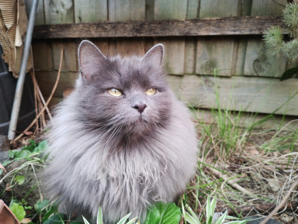
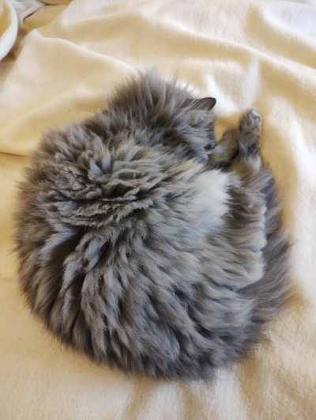

This is the story of floof. At the same time, Whiskey Dama, Cato, Just a smol cat, Wikki-poo.
Faces of the Floof
Floof on the chairlift
I can hasz computering!

Floof as a seedball ready to disperse floof seeds

Snail like sleep posture
Sometime I like to go through the portal and sometime I like to hang near portal. I can determine change in portal status by change in air pwessure! Sometime I like to spoon and sometimes I leave the spooning prematurely. Sometimes I sit on the human thighs sometimes I make the thighs feel forlorn.
- Floof
None of the functionaly on this website works!
Press the button to sign up and nothing will happen! Maybe you will feel a very mild dopamine release by pressing the button?